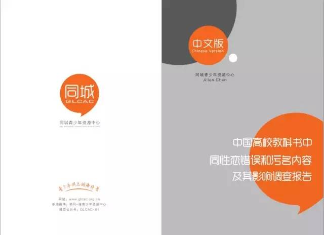

转发｜同志公益路上，寻好玩又靠谱的你
过去在推动青少年LGBT校园权益的路上
偶尔孤独，无助、偶尔兴奋，激动
却少了一群好玩、靠谱的小伙伴
与我们分享同城10周年时刻
2016年，我们期待……
政策倡导、传播、义工管理方向的实习生！
同城青少年资源中心（GLCAC），简称“同城”。2006年成立，是一家中国内地较早专注于青少年同志生存现状和校园权益的服务、教育和支持性的本土非盈利机构。我们通过青少年社群发展、校园教育和教师参与、研究与倡导的三大策略来倡议中国LGBT青少年所应享有的平等权益。目前，我们在广州、武汉、南昌多个城市开展工作。
与我们一起是怎么样的体验？！
听听他们怎么说！


记得我第一次进机构的微信群时，发现与教育部代表唇枪舌剑的秋白也在，当时自己惊讶之余心里暗自觉得她定是个难以接近的御姐，后来发现她对人友善还带有些害羞，心里对她由衷的钦佩。豆豆常常在会议上脑洞大开，思路延伸得让我记录时手忙脚乱；而小宝是我的主管，在工作上对我十分照顾与关心，时常提出实用的工作意见。很感谢他们，让我更加乐于在机构工作。

⚫ 认同GLCAC的价值与理念，相信青少年同志的力量能推动社会改变（别到了谈恋爱，才来说我们价值观不合哟！~~）
⚫ “自找事”型的人才宝宝，遇事主动出击，勤于思考，善于表达，做事靠谱耐心；完事后，疯癫好玩又带点文艺清新！
⚫ 能接受灵活的工作时间，每周3天（工作日，周末，会议均算）
⚫ 实习地点：广州（如是非广州以及周边城市的小伙伴，可报销一次往返广州的交通费用哟！虽不提供住宿，但我们可以帮忙解决！大丈夫！）
⚫ 实习期周期：不少于3个月，可为半年或一年
⚫ 招募报名截止时间为：2016年2月15日
⚫ 面试时间为：2016年2月20日（距离较远的小伙伴使用网络面试，广州及周边城市的小伙伴直接来面基吧！）
⚫ 本期实习时间为：从2016年3月1日起的一年内（具体按照协商的实习周期而定）

教师撑同志活动实习生（2名）
此岗位的你需要：
⚫ 参与教师游说合作团体联络与跟进
⚫ 参与团体定期网络工作坊的筹备
⚫ 负责游说活动的传播与推广和媒体联络
⚫ 搜集潜在可游说的编者信息，并进行联系
⚫ 参与校园LGBT政策项目的其他事务
特别钟爱这样的你：
⚫ 能够撰写有传播力、符合议题定位的文章
⚫ 具有较强的协调能力，喜欢与人打交道
⚫ 能够保证足够时间投入
⚫ 曾经参与教师游说的网络活动伙伴优先
⚫ 摄影爱好者或懂拍摄视频者优先
还记得吗？过去两年内，近100位老师坐不住了——陆续公开表态对同志青少年的友善与支持。这就是每年我们与全国各地的LGBT团体共同开展“Teachers we need you”教师撑同志网络活动。通过影响教育工作者对同性恋话题友善回应，结合消除教科书污名同性恋的负面影响，促进社会公众对高校同性恋学生心理健康教育权的了解和关注。
2016年，用你的力量影响下一名LGBT好友的老师吧！
资料汇编实习生（1名）
主要负责《校园多元性/别手册》、《教师参与性/别教育资源手册》的编写，包括：
⚫ 参与手册内容的讨论，统筹编写的进度
⚫ 评估调查教师的需求，收集编写相应资料
⚫ 负责手册的撰写
⚫ 备注：两本手册广泛用于全国教师培训，LGBT教育活动！去到哪都能看到你编的书，请加我为好友。
特别钟爱这样的你：
⚫ 为人细心耐心，耐得住看资料的寂寞
⚫ 逻辑性较强，思路清晰，有一定的文字功底
⚫ 善于沟通，了解老师的需要
⚫ 曾有资料汇编经验者优先
⚫ 法律、人社科专业者优先
诶！这些牛逼报告不就是秋白行动的必备产品么？！好腻害！快来成为研究调查的一员吧！

LGBT青少年研究调查实习生（1名）
牛逼哄哄的你需要：
⚫ 进行相关文献检索、案例分析与记录
⚫ 与调查团队讨论调研方案并设计调研的工具
⚫ 负责的调研的开展与执行资料整理
⚫ 与合作伙伴的联络
⚫ 调查报告的撰写
特别钟爱：
⚫ 社会学、社会工作、新闻、人类学，法律等专业就读或毕业
⚫ 对LGBT议题有一定的了解与关注，对议题有自己的思考，此研究可与自己的论文结合。
⚫ 保证足够的调研时间的投入，拒绝半途而废者
⚫ 团队协作能力较强，心态开放愿意与人合作。
⚫ 有相关调查研究经验者优先
⚫ 申请本岗位请提供相关的证明文件，此调研的议题与LGBT校园处境以及需求相关。

作为机构必不可少的支持部门，主要负责传播平台的维护与运营，文案的撰写，对外材料的开发等。2016年，我们将对其进行工作的调整与提升，使其彰显维护机构品牌与形象的高！大！上！职能，怎能缺少完美主义者的你？！
品牌与传播方向（1名）
实习的你需要：
⚫ 负责机构所有平台的管理与维护，包括对文案排版与编辑与定时发布、粉丝答疑
⚫ 负责机构每月一高潮的简报制作
⚫ 负责平台内容的推广（QQ群、微信、豆瓣、邮件组……）
⚫ 如既能负责平台维护与推广同时具有较强的文案撰写的能力者，可提升为兼职哟
特别钟爱：
⚫ 做事责任心强，工作时间灵活，保证随时可以发布热文
⚫ 对文案的排版与编辑工作具有完美主义婊的心
⚫ 扎实的文字功底，能够撰写有传播力、符合议题定位的文章（兼职）
⚫ 新媒体平台管理的经验优先

岗位：行政实习生
⚫ 义工管理，包括资料审核，数据管理，根据工作需要，对库内义工进行联络协调
⚫ 义工建设，包括义工每月课堂的筹备与举办以及定期的组织库内义工活动等
特别钟爱这样的你：
⚫ 时间灵活，愿意投放时间，做事认真负责，思维灵活
⚫ 愿意与人交流，有一颗“社交名媛”之心
⚫ 爱好活动策划，满脑子“坏”主意，喜欢“勾搭”或“被勾搭”
⚫ 既能玩，能疯，能吹，能装逼的派对狂
⚫ 学习多元性/别的基础理论知识，了解LGBT青少年在校园的真实需求以及参与建设LGBT友好校园的活动
⚫ 一群无话不说，无限制级的基友伙伴，分享你的快乐，分担你的忧愁，打开你的小宇宙
⚫ 一次通过性与性别的讨论与探索，深入倾听内心世界的机会
⚫ 参与机构实习生成长培训以及推荐参加外部同志公益机构专业培训与交流的机会
⚫ 优先获得奔向全国各地开展LGBT校园活动的机会
⚫ 实习期间，提供基本的工作交通及餐饮补贴
⚫ 同城青少年资源中心哔哩哔哩的实习证明
请到https://jinshuju.net/f/9UVAeI或扫下方二维码
填写申请表格《GLCAC实习生申请表（2016年1期）》
⚫ 简历请直接上传至申请表中，若附件超过20MB，请将简历附件投至lawglcac1310@gmail.com；邮件命名格式“姓名+实习意向岗位”； 如有相关岗位的作品以及以往撰写的文案，也请发送到邮箱：lawglcac1310@gmail.com
⚫ 申请表提交后我们会在收到后一周内给予回复，请留意邮件通知
⚫ 若有各种疑问，请扫描下方二维码进入实习生咨询群交流

编辑：夏仇/小新